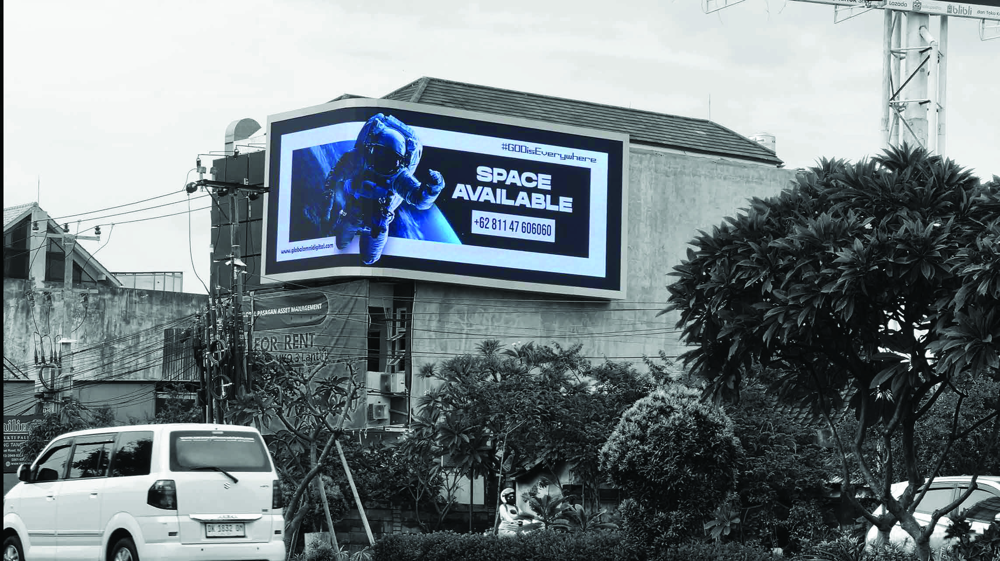

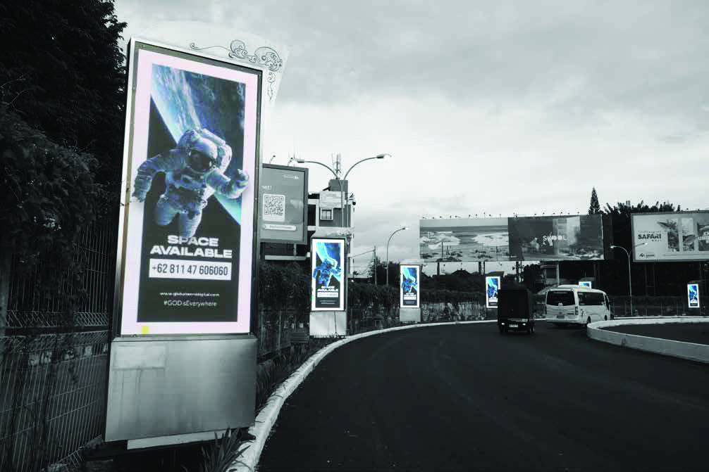
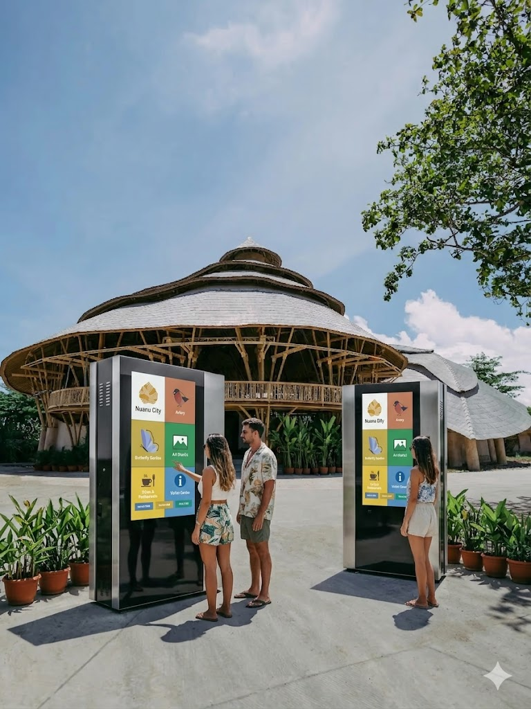
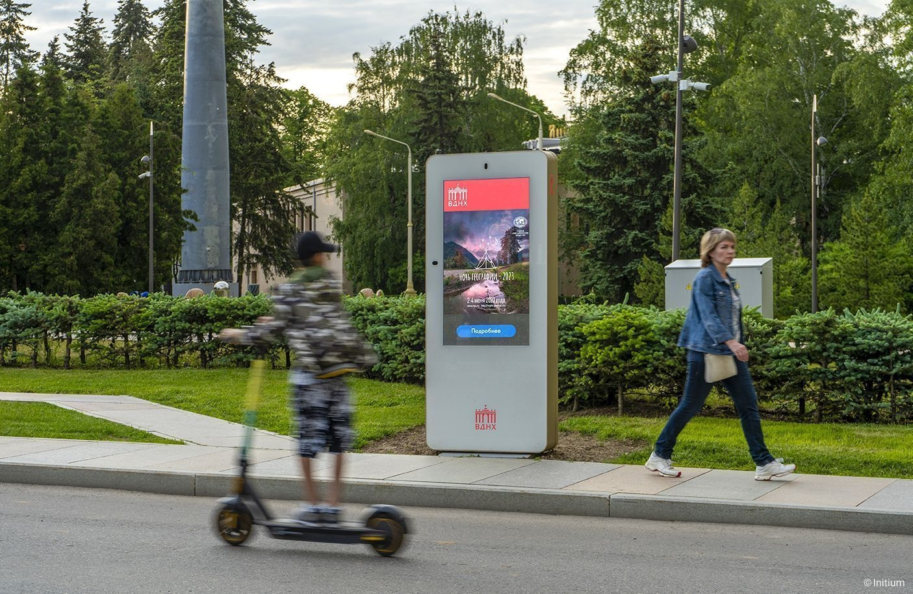

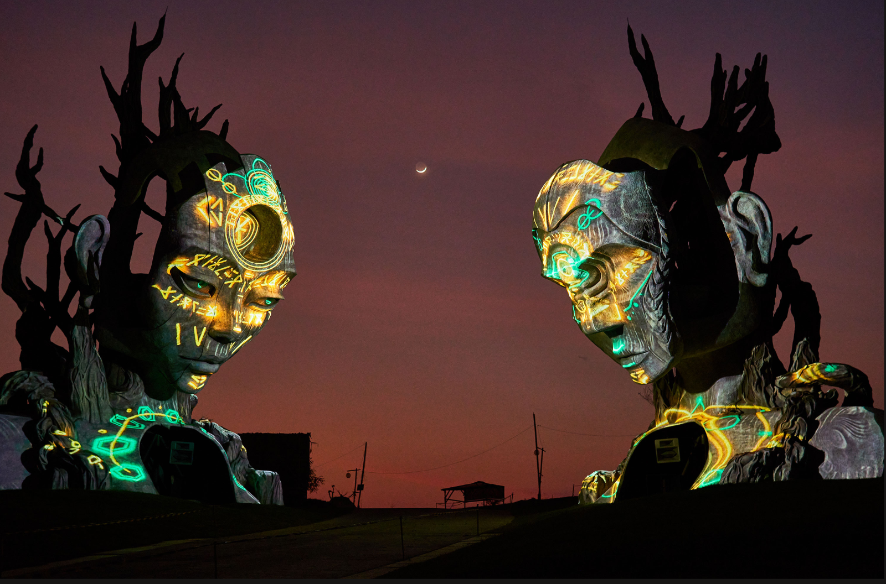
Two presences. One contour.
Advertising at Nuanu is not media inventory. It is one living contour — an outer layer that captures desire across Bali, and an inner layer that guides immersion through the creative city — bound by a single intelligence that connects every surface, online and offline, nature and technology.

Captures desire.
A cinematic campaign staged across Bali's most travelled roads — from arrival at Ngurah Rai to the gates of Nuanu, an hour north in Tabanan. Iconic, warm, impossible to ignore.
The discounts will pleasantly surprise you.
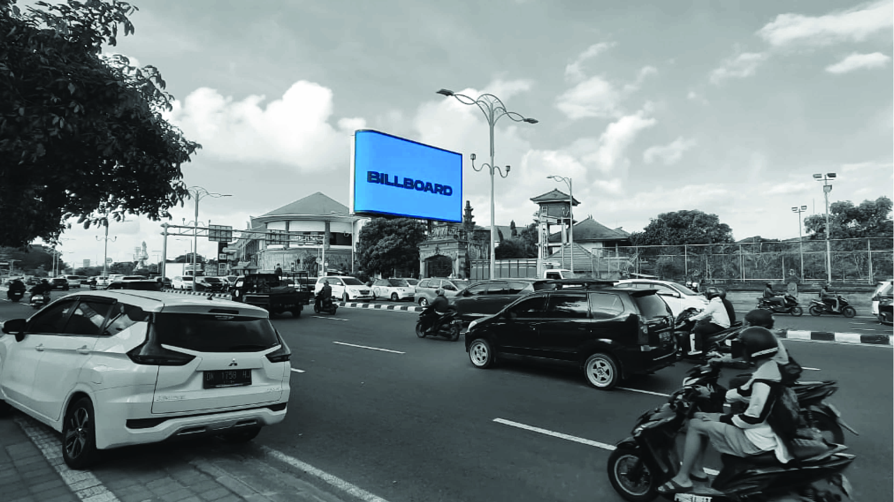
Road presence.
By the numbers.
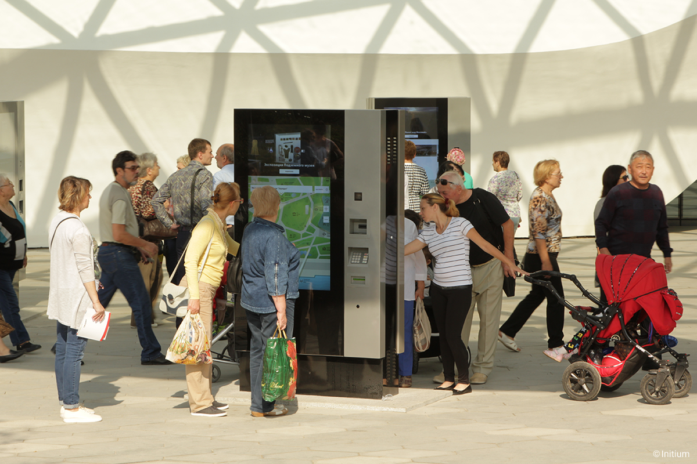
Where nature meets the future.
One audience, followed along its entire movement. The visitor drawn by a billboard at the airport is recognised inside Nuanu, continues on their phone, and joins the community — one marketing contour binding online and offline, jungle and high-tech.
A dedicated media department — designed and led by Yantra Amore, in joint venture with Alex — running external and internal advertising as one synergetic system inside Nuanu's marketing contour.
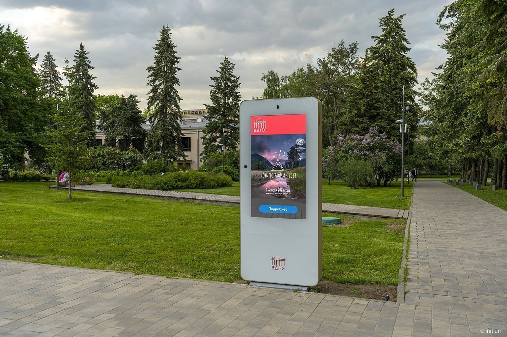
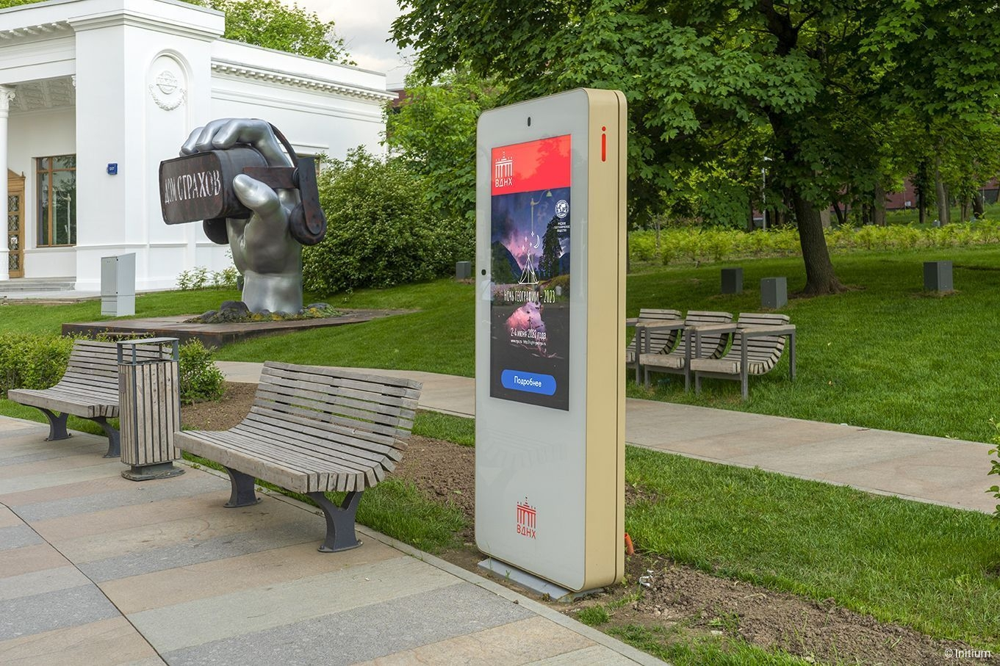
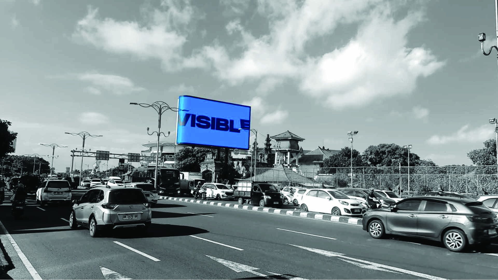
Guides immersion.
Inside the 44-hectare creative city, advertising becomes orientation. All-weather smart totems and panels carry visitors from the parking through the Aurora Media Park to every zone — calm, precise, woven into nature.
And data becomes income.
no staff required
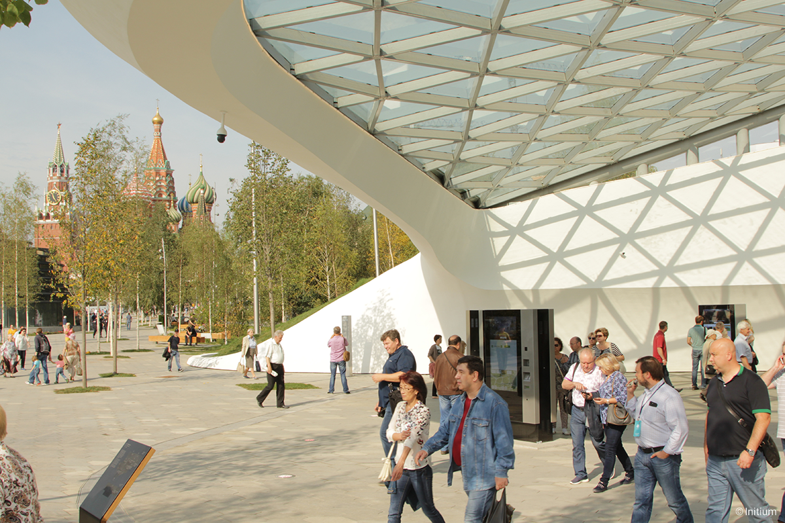
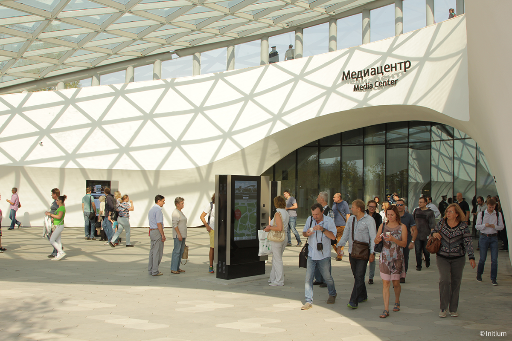
Animated routes to any zone on the Directorix® platform.
4K, dual-side, built for the tropics — since 2004.
Carry the route on your phone — no download.
Context-aware offers by time, weather and flow.
Selfie-box and AR postcards that travel online.
Flows, interests and routes — the last-mile data.
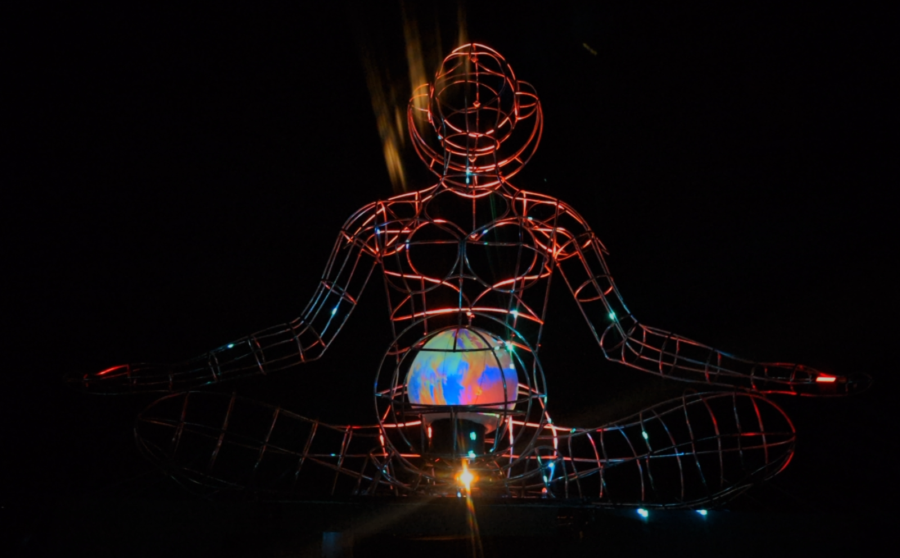